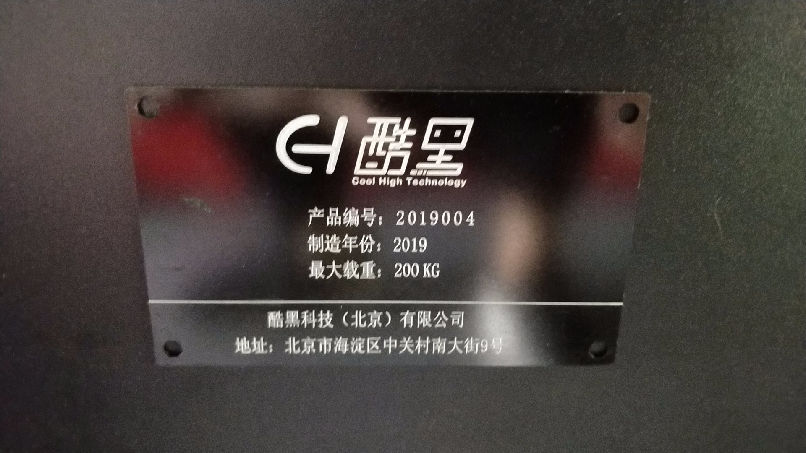

概述
本文件夹内主要提供了Apollo开发套件底盘的使用说明书，介绍了底盘的整体结构，硬件安装、线束连接方法，电池使用、车辆上下电、遥控器使用方法、车辆安全机制使用方法、车辆底盘故障排查方法等内容。
请您在收到开发套件后，第一步进行阅读车辆的使用说明书，来对车辆的整体结构概况，车辆的操作使用方法等进行学习了解。
车辆使用手册使用说明
由于车辆的底盘迭代批次不同，车辆的使用方法略有差异，请您在收到开发套件后，首先需要查看位于车身侧面的车辆铭牌<产品编号>（如下图所示），获取车辆的产品编号。

根据下表，查阅产品编号对应的使用手册，对照说明书进行使用。
车辆铭牌产品编号范围 |
车辆使用手册 |
|---|---|
2019001~2019016 |
|
2019017~2019050 |
|
2019051~2019090 |
|
2019091-2019095 |